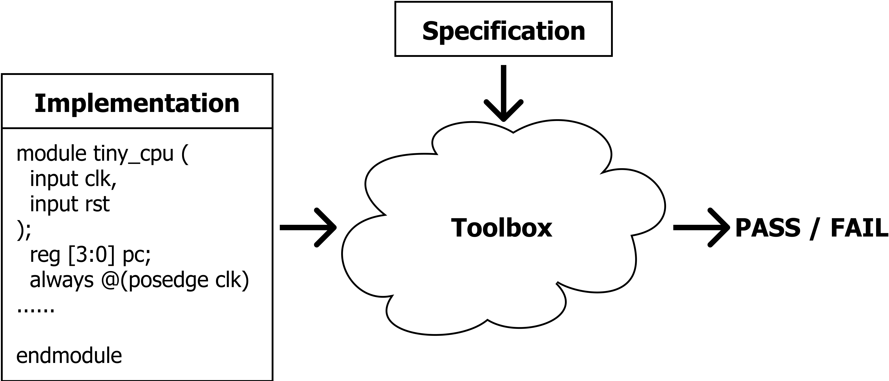
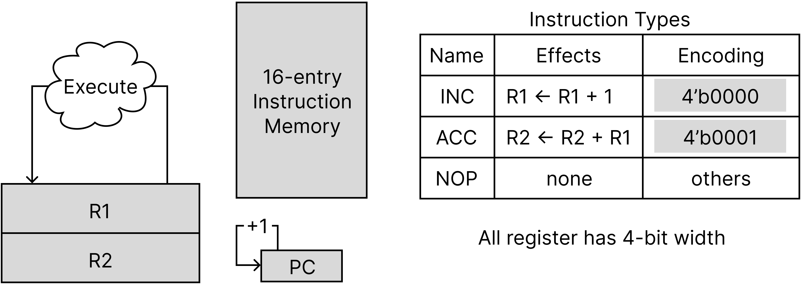
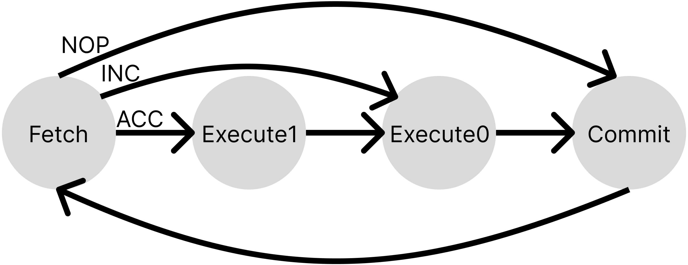

Table of Contents
Formal Verification of RTL Implementation
Formal verification is a well-explored research area and has been shown to be effective in hardware verification. In this recitation, we will provide an overview of one type of formal verification technique, called bounded model checking. You will learn how to use a powerful toolchain that combines Yosys, Rosette, and several scripts to perform bounded model checking and find processor bugs on RTL code. It will give you a taste on how to perform automatic bug finding and understand the challenges of this topic.
We will start by giving you the big picture of formal verification and how the toolchain will help acheive our goals. Next, we will go through the basics of Rosette, which programs using a functional programming lanaguge. It might be a pain to swtich from C/Python to a functional programming lanague, but we will go through the start code with you and get you fully prepared. Finally, you will try to play with the toolchain and automatically find bugs as you like.
Getting Started
The starter code of the recitation is here.
It could be run on our lab machine unicorn.csail.mit.edu. Log in with the same user account as previous labs.
Alternatively, you can use the docker file provided in the starter code to run the lab locally. Instructions to run the docker are provided here. (The docker image takes ~20 minutes to build.)
The Big Picture
The general idea of formal verification is far from complex. As shown in the picture below, we have 1) an implementation of the hardware (e.g., verilog code, miniSpec code), which can be complex and potentially buggy, and 2) a clearly-defined specification of what we expect the hardware to do, like the RISC-V manual we use in lab6.A. The goal of formal verification is to check the implementation matches the specification under all possible inputs to the hardware.

Model Checking = Cover All Reachable States
We consider our hardware as a state machine, the concept of model checking is to check for all the reachable states of the system to satisfy certain properties/specifications. One approach is to do exhaustive search, but we may suffer from serious scalability issues, especially when the input space is huge. In this recitation, we will use a symbolic execution engine and leverage some help from advanced mathmatical techniques (SMT solvers) to automatically search the space in an efficient and smart way. Let us introduce our first tool, a programming language, called Rosette.
Rosette is a language extension based on Racket to add the symbolic execution feature. Language extension is similar to a library in C/python, but can provide more syntax-related features in addition to extra functions. We will explain how Rosette works using the following example.
Symbolic Execution Using Rosette
Exercise
To test the code by yourself, run
cd RosetteExample && racket example.rkt
Broken Environment
In case the command above returns
-bash: racket: command not foundonunicorn, trysource /knox/envSetup.shto set environment variables. (This should not happen normally because this source command should be run automatically when you log in.)
Here is a function that can trigger some forbidden execution path under some non-trivial condition:
#lang rosette ; # Here is a python version:
(define (f x y) ; def f(x, y):
(when (= (* (+ x 10) 2) y) ; if (x+10)*2 == y:
(assert #f))) ; assert False
(f 1 10) ; f(1, 10)
We want to check this program (corresponding to the implementation in the big picture figure) against a specification, which says the program does not trigger an assertion. We will need to check it against all the inputs.
Here, rather than using concrete input values, we use Rosette to declare the inputs as symbolic values and ask Rosette to check all possible inputs. No worries about the syntax for now, we will go through the syntax in detail in a few minutes.
(define-symbolic x integer?)
(define-symbolic y integer?)
(verify (f x y))
When running the verify command, Rosette will do some magic internally and generate an input (x and y) that fails the function:
(model
[x 0]
[y 20])
Excellent tool! Using Rosette, we are capable to write a program embedded with assert (a state that we should not reach) and ask Rosette to automatically generate the inputs that can lead us to that invalid state. We call the above output a counterexample.
How does Rosette work internally?
Skipping this part will not prevent you working on the recitation. But read on if you are curious.
Symbolic Execution. The first technique Rosette uses is called Symbolic Execution. Normally, a program will execute on concrete input values. For example, (* (+ 1 10) 2) will return 22. However, you will forget how 22 is computed. Executing on symbolic value, instead, will remember how a new value is computed from the symbolic input values by using a syntax tree as the return value. For example, running the following program in Rosette will print exactly (* (+ x 10) 2):
(define-symbolic x integer?)
(println (* (+ x 10) 2))
With symbolic execution, every time a branch is met, the condition of the branch is actually an expression of symbolic values that encodes the syntax tree that computes this condition. Since we do not know whether the symbolic expression is true or false, we will execute both sides of the branch. But we have to use an extra data structure to remember the symbolic expressions of all branches in the history and remember which direction we took. This extra data structure is called path condition that can be extracted using (vc-assumes (vc)) in Rosette. This following example will print Path1: (= 0 x) and Path2: (! (= 0 x))
(define-symbolic x integer?)
(if (= x 0)
(printf (~a "Path1: " (vc-assumes (vc)) "\n"))
(printf (~a "Path2: " (vc-assumes (vc)) "\n")))
Finally, every time you make an assertion under a specific path, the path condition will be combined with the asserted expression. This combined expression will be used to determine whether the assert true will be guaranteed. For example, the following code will print (|| (! (= 0 x)) (= x y)), which is the condition that the assert true will be guaranteed.
(define-symbolic x integer?)
(define-symbolic y integer?)
(when (= x 0)
(assert (= x y)))
(println (vc-asserts (vc)))
In summary, with the techniques of syntax tree expression and path condition, symbolic execution converts assertions in the program into symbolic expressions that need to be asserted to be true.
SMT solver. The second part of Rosette is about using an SMT solver as the backend. With symbolic execution, the problem of finding a forbidden execution path is converted to a pure mathematical problem. Rosette will send the symbolic expression (i.e. a logic formula) to a logic solver (i.e. a SMT solver) and the SMT solver will find a binding of symbolic values that trigger the forbidden execution path. For example
(model
[x 0]
[y 20])
shows a binding that x is 0 and y is 20.
In the rest of the recitation, free feel to print out symbolic expressions and path conditions to get a sense of what Rosette is doing.
Verifying The Tiny CPU
This is probably a good time to introduce our example CPU that we try to verify: the Tiny CPU. Throughout this recitation, we will use it to demonstrate how to use the model checking framework.
Tiny CPU Specification
We will verify a verilog implementation of tiny_cpu matches its specification as below.

The tiny_cpu cannot really be simpler. It uses 4 bits for all registers. It has two general purpose-register R1 and R2, as well as a pc register. At each cycle, it reads an instruction from a 16-entry instruction memory and decodes&executes it as 3 possible instructions, INC, ACC, and NOP, as shown in the table above. Then, pc will be incremented by 1. (pc can overflow from 0xf to 0x0.) There is no data memory.
We implement it in verilog as a multi-cycle cpu (tiny_cpu/tiny_cpu.v). It executes instructions one by one. It takes 2 cycles to execute an INC instruction, 3 cycles to execute an ACC instruction, and 1 cycle to execute an NOP instruction. Here is the internal stage transition in the implementation:

At the commit stage, it will increment the pc and update R1, R2 according to the instruction.
From RTL to Rosette
We have seen that the Rosette is a functional programming language, far different from our RTL code. Therefore, the first step is to lift the RTL code that we are trying to verify to Rosette. You can view this process as a translation process from one language to another. For this purpose, we use a toolchain “yosys+knox“ developed by Anish Athalye from the PDOS group at MIT.
Take our tiny_cpu as an example, run ./scripts/v2rkt.sh will convert the tiny_cpu/tiny_cpu.v into generated_src/tiny_cpu.rkt. The converted Rosette code provides a few APIs to simulate the tiny_cpu.
To demonstrate how these APIs can be used, we provide src/impl.rkt. It will simulate the tiny_cpu for 20 cycles and print its state at each cycle.
Exercise
Run
./scripts/v2rkt.shto convert Verilog to Rosette. Then, simulate tiny_cpu for 20 cycles withracket src/impl.rkt.
How does “yosys+knox” work internally?
Here is the story of how this toolchain is created. Anish, the author of knox was looking for a way to convert Verilog code to Rosette so that he could symbolically execute the Verilog code to conduct some interesting research.
Traditionally, the most direct method to translate Verilog code to a simulator code involves parsing the Verilog into some netlist representation and using the netlist to generate the target code in the new language. There are many compilers (or more precisely, synthesis tools) available to do this, yosys is one of them. But even with the help of them, you need to deal with a lot of tedious syntax problems of Racket.
Anish, instead, used chatGPT to do that. End of Story. tried to find a simpler way. He realized one target code called SMT2 that yosys can translate Verilog to, looks very similar to Racket code. (Check the file generated_src/tiny_cpu.smt2 by yourself.) Then, he decided to teach Racket to understand SMT2 code!
Remember that we say Rosette is a language extension to Racket? Anish wrote a new extension to Racket called yosys so that Racket can understand the syntax of SMT2 code and define some Racket functions from it. These functions are the APIs generated_src/tiny_cpu.rkt provides to us. Actually, the only difference between generated_src/tiny_cpu.rkt and generated_src/tiny_cpu.smt2 is an extra line of #lang yosys that imports the yosys extension.
Hoepfully now you can understand better about “Language extension is similar to a library in C, but can provide more syntax-related features in addition to extra functions”. It can really do some magic.
Learn Rosette Syntax
The transition from a C-programming style to a functional-programming style like Rosette can be painful. But hopefully, you are motivated enough to tackle this challenge so far. We will guide you to read through src/impl.rkt to warm you up.
Rosette and Racket
Firstly, you might notice the filename extension is .rkt. This is because technically, most code here is not Rosette code but Racket code. As we mentioned, Rosette is a language extension based on Racket.
To render the file with your editor, your should search for Racket plugins. Here are the official versions: VScode and Sublime. Vim and Emacs probably support racket out of the box. If not, check: Vim and Emacs
Racket’s official document page is extremely convenient to search for information about sytax or functions. Just put the function name into the search box at the left-top corner. We will also provide links to this document while going through the code.
Define Functions, Call Functions, and Define Variables
Skim through the file, you can see a bunch of functions are defined in a pattern:
(define (init-impl imem)
; STEP1: Initialize a new tiny_cpu whose states are all zeros.
(define tiny_cpu (new-zeroed-tiny_cpu_s))
; STEP2: Pull up the reset signal and advance cpu state to the next cycle.
(set! tiny_cpu (step (with-input tiny_cpu (input* 'rst #t))))
... ...
; STEP4: Create a impl structure and return it.
(impl tiny_cpu)
)
This defines a function named init-impl which takes one argument named imem. The last line of the function body (impl tiny_cpu) is the return value.
To call a function, we put brackets around the function name and the argument. For example, (impl tiny_cpu) calls a function named impl with argument tiny_cpu.
The variables are defined in a similar way. The first line of the function body above defines a variable named tiny_cpu, which is the return value of function new-zeroed-tiny_cpu_s (we will explain the meaning of new-zeroed-tiny_cpu_s later). Note that in a functional programming language like Racket, people try to avoid updating the value of a variable (for code reusability). However, you can still update its value with set! function. For example, the code above updates the value of tiny_cpu to the value returned by (step (with-input tiny_cpu (input* 'rst #t))) (we will also explain the meaning of step later). Actually, it is a convention to add ! to the function name if it updates the value of its arguments.
Include libraries
The first three lines in the file are the basic information about the whole file. #lang rosette states the file use rosette as a base language. (require ...) includes (or imports) a few other files. (provide ...) states that if this file is required by another file, that file will have access to use these provided functions and variables.
Struct
Same as many other languages, you can define your own data structure in Racket, which enables modular designs. Actually, this whole file is defining functions operating on a struct named impl. We use init-impl to initialize a tiny_cpu implementation, use step-impl! to simulate the implementation for 1 cycle, and use impl-commit to indicate whether it will commit an instruction at this cycle. It is a naming convention to have the struct name impl in the function names and these functions’ first arguments are actually also a variable with impl type. To understand these functions, the table below summarizes the default APIs to operate on a struct.
| API | Example | |
|---|---|---|
| Define a new struct | (struct id (field1 field2 …)) | (struct impl (tiny_cpu)) defines a new data type named impl, it has a field named tiny_cpu. |
| Initialize a struct | (id x1 x2 … ) | (impl (new-zeroed-tiny_cpu_s)) returns a impl struct whose field is initialized with the return value of function new-zeroed-tiny_cpu_s |
| Extract a field | (id-field INST) | (impl-tiny_cpu impl) takes an instance named impl and returns the value saved in its tiny_cpu field. |
| Update a field | (set-id-field! INST value) | (set-impl-tiny_cpu! impl (step …)) uses the return value of function step to update the tiny_cpu field of instance impl |
Bitvector and vector
When we model and simulate a cpu, most data is in bit or vector of bits formats. To represent these data, we will frequently use bitvector and vector structure in our Racket code. bitvector is a datatype that saves bits with a fixed width (e.g., 4 bits, 32 bits). It can be used to represent a register or an entry of the memory. vector is a fixed-length array. It can be used to represent a memory.
For example, in the testMe function in src/impl.rkt. we call init-impl function to initialize a tiny_cpu with an imem as the argument. The imem is:
(vector (bv 0 4) (bv 1 4) (bv 0 4) (bv 1 4) (bv 0 4) (bv 1 4) (bv 0 4) (bv 1 4)
(bv 0 4) (bv 1 4) (bv 0 4) (bv 1 4) (bv 0 4) (bv 1 4) (bv 0 4) (bv 1 4))
It initializes a 16-element vector and each element is a 4-bit bitvector whose value is either 0 or 1.
For more APIs on bitvector and vector, the official document is the most helpful resource. We also summarize a few APIs here:
| API | Example | |
|---|---|---|
| Initialize a bitvector | (bv value size) | (bv 1 4) returns a 4-bit bitvector whose value is 1. |
| Compare two bitvectors | (bveq x y) | (bveq (bv 1 4) (bv 0 4)) returns #f since 1!=0 |
| Add two bitvectors | (bvadd x y) | (bveq (bv 1 4) (bv 15 4)) returns (bv 0 4) |
| Concatenate bitvectors | (concat x1 x2 …) | (concat (bv 1 4) (bv 0 4)) returns (bv 16 8) |
| Initialzie a vector | (vector v1 v2 …) | (vector (bv 0 4) (bv 1 4)) returns a 2-element vector |
| Extract an element from a vector | (vector-ref vec pos) | (vector-ref (vector (bv 0 4) (bv 2 4)) 1) returns (bv 2 4) |
| Extract an element from a vector with a bitvector | (vector-ref-bv vec pos) | (vector-ref (vector (bv 0 4) (bv 2 4)) (bv 1 4)) returns (bv 2 4) |
Be careful with the difference between
vector-refandvector-ref-bv. You might want to use the later one in many cases.
Printf
Printing is the most basic way to debug a program. Racket provides quite a few different ways to print out a datatype in different formats. We will only use a most simple way:
| API | Example | |
|---|---|---|
| print out a few variables | (printf (~a x1 x2 …)) | (printf (~a “commit: “ (impl-commit impl) “\n”)) prints out something like “commit: #f” and starts a new line. |
Branch and Loops
Here is how to write the simplest control flows in Racket with when, cond (aka, case switch) and for:
| API | Example | |
|---|---|---|
| if condition | (when condition expr1 expr2 …) | (when (bveq inst INC) (set! R1 (bvadd R1 (bv 1 4))) (set! R1 (bvadd pc (bv 1 4)))) executes the INC instruction. |
| case switch | (cond [cond1 expr1 expr2 …] [cond2 expr1 …] [else expr1 …]) | (cond [(bveq inst INC) (set! R1 (bvadd R1 (bv 1 4))) (set! R1 (bvadd pc (bv 1 4)))] [else …]) decodes and executes instructions. |
| for loop | (for ([loopVar (in-range loopNum)]) expr1 expr2 …) | check the for loop in testMe function in src/impl.rkt |
Hands-on Exercise
With all the information above, you can start the following exercises!
Exercise 1: Interact With Tiny CPU in Rosette
First, let’s ensure we can run the tiny cpu which was lifted from RTL to Rosette. You can even interact with the CPU and monitor its execution.
Here is a reference of the APIs provided by tiny_cpu.rkt and used in src/impl.rkt:
| API | Return Value | |
|---|---|---|
| Initialization | (new-zeroed-tiny_cpu_s) | a new structure that saves the state of an initialized tiny_cpu (tiny_cpu_s type) |
| Simulation | (step (with-input tiny_cpu (input* ‘rst #t))) | a new state of tiny_cpu which is derived by simulating from state tiny_cpu by 1 cycle with input rst fed with true (you can change #t to #f to feed false to rst) |
| Extract States | (tiny_cpu_s-REGNAME tiny_cpu) | the value saved in register REGNAME (i.e., R1, R2, pc in our case) |
Exercise 1
After converting Verilog to Rosette with
./scripts/v2rkt.sh. Isn’t it exciting to be able to simulate a cpu and extract the value of any possible registers at any cycle?Currently, we only print the
commitsignal at each cycle. Complete theprint-implfunction insrc/impl.rktto further print the pc, R1, and R2 registers, with the APIs provided in the table above. You can also takeprint-impl-imemfunction as an example.You can test the code with
racket src/impl.rkt. It will run thetestMefunction at the end of the file, which simulates the implementation for 20 cycles. With your code, you should see pc, R1, and R2 are printed out at each cycle.
Exercise 2: Encode Specification into Rosette
The yosys+knox toolchain allows us to lift the RTL implementation to Rosette, meaning we have the model that we want to check. We now need to also encode the specification of the processor into Rosette.
Specification is basically “what we expect” the hardware to do. Unfortunately, such expectation is usually expressed in human language with unavoidable ambiguity (imagine your boss is asking you to add some fancy features in hardware, it is probably very high-level and misses details). However, to conduct a formal verification, it is very important to express the specification perfectly precisely, because otherwise, Rosette will not know how to check the implementation.
In this recitation, we will manually translate the tiny_cpu specification into Rosette. We provide you src/spec.rkt as a start code. You can execute it with racket src/spec.rkt. But before you write your part of the code, it does nothing at each cycle.
Exercise 2
Complete the
step-spec!function insrc/spec.rktto update the tiny_cpu’s state according to the specification figure above. Your specification code should execute 1 instruction at each cycle (while the implementation might take multiple cycles for 1 instruction).Test your code with
racket src/spec.rkt. It will execute the program defined intestMeat the end of the file for 10 cycles. With your code, you should see, at each cycle, the state is updated properly according to the program.
Bad Syntax Error
If you see an error of
let: bad syntax (missing binding pairs or body), this likely means you left one case of thecondto be empty, which is not allowed in Racket. You can solve it by adding a dummy line(void).
How do formal people ensure a precise ISA specification?
The ISA manuals are usually hundreds of pages, and it is non-trivial to manually translate them into an executable specification. Researchers working on formal verification always spend a lot of effort translating the manual into a language that is compatible with their verification platform (e.g., Coq, HOL4, and our Rosette). Recently, they made insteresting progress that tries to solve it once and for all.
Instead of translating ISA designers’ human language manual, they try to take control and ask ISA designers to write ISA manual in an executable language from the beginning! “Sail is a language for describing the instruction-set architecture (ISA) semantics of processors. Sail aims to provide an engineer-friendly, vendor-pseudocode-like language for describing instruction semantics.” From Sail, compilers can generate Latex snippets for documentation, C/Ocaml for executable emulator, Isabelle/HOL4/Coq for formal reasoning.
Exercise 3: Use assert to Express “Implementation Matches Specification”
We are almost there! We will now fill in the last piece of our framework, which will compare the execution of the implementation and specification and assert they match.
What does “match” mean exactly? The implementation of hardware can be far more complicated than the specification. It can take different cycles to finish one instruction, there can be multiple instructions in-flight, and can have different book-keeping structures to remember the execution stages of all in-flight instructions. For a CPU design, all states in the implementation are called micro-architectural states and the states described in the specification only are called architectural states. In order to compare the execution trace from this complicated implementation to the specification, we need to look at the cycle-by-cycle trace of micro-architectural states and extract certain states at certain cycles that can reflect the architectural states.
In src/impl.rkt, we provide a function called impl-archState to extract those certain states from all micro-architecture states. And provide a function called impl-commit to indicate at which cycle, the states extracted by impl-archState should be compared to the architectural state. We use the function spec-archState in src/spec.rkt to extract the architectural state from the specification.
Those states are assert to be the same in the simu function in src/veri.rkt. Specifically, src/veri.rkt will simulate the specification and implication with an initial imem containing only symbolic value. The verify function will ask SMT solver to check all assert and try to find a concrete instance of the imem that violates some asserts. If SMT provides a counterexample, we query it for the concrete instance of imem and simulate the specification and implication again to demonstrate the assert fails.
Exercise 3
Complete the
impl-archStatefunction insrc/impl.rktandspec-archStatefunction insrc/spec.rkt. They extract the architectural state of the implementation and specification.Then, run
racket src/veri.rktto verify the tiny_cpu. You should see “Counterexample Found” and then the counterexample is simulated and the states of implementation and specification are printed out whenever an instruction is committed. Could you describe the bug found in the implementation?
Maybe you want a function to combine multiple bitvector together? Try
concatfunction mentioned here.
Congratulations! You have finished our materials on formal verification. Hope you enjoy it.